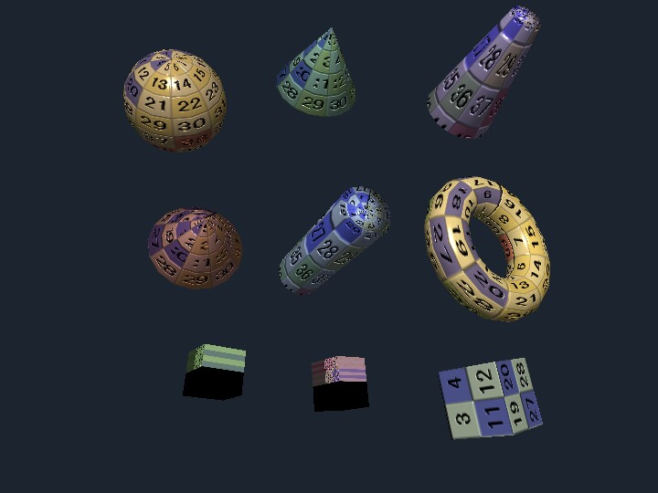

model_shape
English | 日本語

Overview
- This sample validates the
ModelAssetreturned byPrimitive.jswithModelValidator, converts it intoShapeobjects withModelBuilder, and displays the result - Multiple shapes are arranged with normal maps, but the main characteristic is that the shape-generation path is unified as
Primitive -> ModelAsset -> validate -> buildrather than writingShapedata directly WebgApp.jsis used so initialization, message display, and the loop are collected through the high-level API
How to Run
- Open ./model_shape.html
- Use a browser with WebGPU support, and check the help panel and HUD together with the sample when needed
webg Features Used
WebgApp: standard initialization, render loop, and operation-guide displayPrimitive: generates basic primitives asModelAssetModelAsset: shared entry point for data representationModelValidator: validates consistency of geometry, animation, nodes, and related dataModelBuilder: constructsShapegroups fromModelAssetSmoothShader: draws regular textures together with normal mapsTexture.buildNormalMapFromHeightMap: generates a normal map from the same image
Checkpoints
- Confirm that the
ModelAssetreturned byPrimitivecan be passed directly to the validator - Confirm that normal-mapped rendering still works even for
Shapeobjects created throughModelBuilder - Compared with
shapes, confirm that this sample is meant to follow the processing flowPrimitive -> ModelAsset -> validate -> buildrather than to compare visual appearance - Confirm that toggling wireframe and toggling the normal map on or off does not break the display control even though the generation path changes
Controls
- Drag / arrow keys: orbit camera rotation
- Mouse wheel /
[ / ]: zoom Space: pause rotationN: toggle the normal map on or offW: toggle wireframe on or offR: return the camera to its initial position